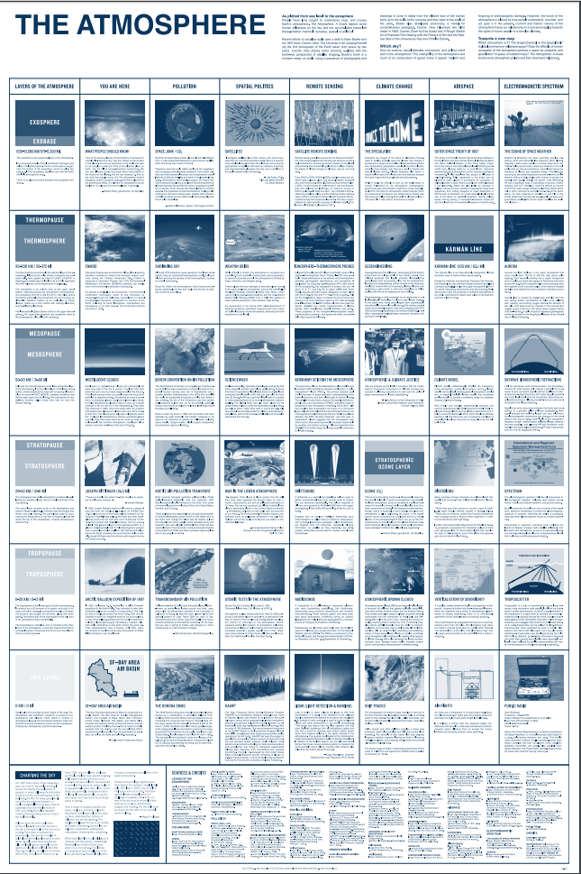
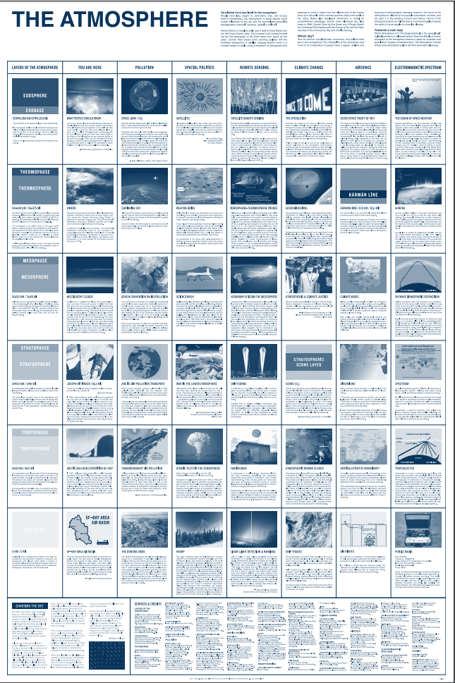

THE
-
FUT
URE
-
EME
RGE
NT↗︎
-
 

“The Atmosphere, A Guide
Lithographic print multiple
“The Atmosphere, A Guide (2013-2016) is a poster-essay depicting various human influences on the sky and their accumulated traces, whether chemical, narrative, spatial, or political. Visually referencing the Cloud Code Chart, another interpretive aid for looking up, the Guide visualizes some ways humans occupy present, past, and future atmospheres, from sea level to the exosphere.”